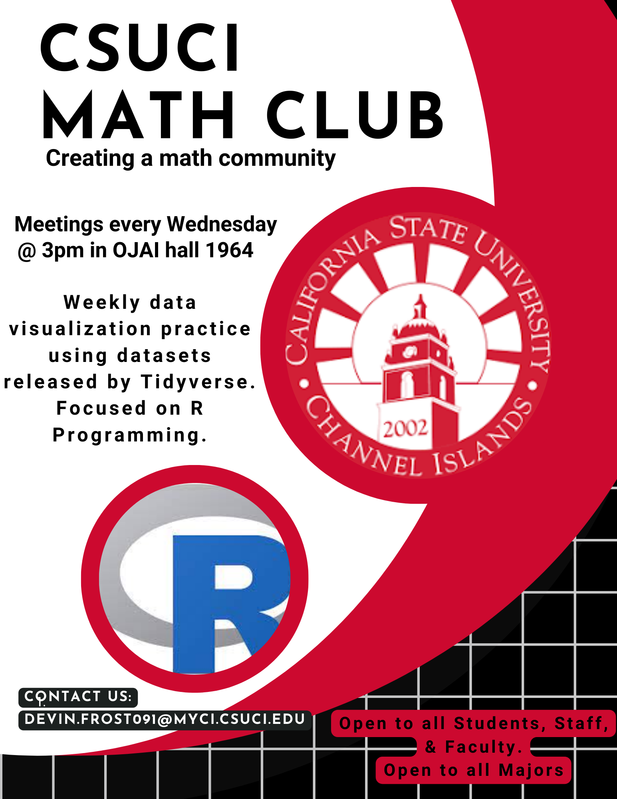
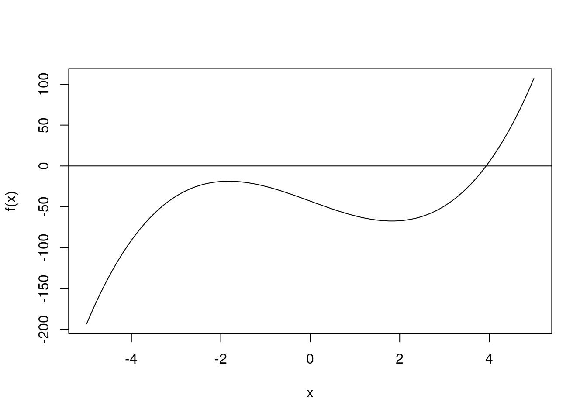

Functions
Anouncements - Tidy Tuesday on Wednesday

Learning Objectives
- Built-in Functions
- User-built functions
- Extensions
Built-in Functions
Built-in Functions
There are several available functions in R to conduct specific statistical methods or tasks
Help Documentation
| Section | Description |
|---|---|
| Description | Provides a brief introduction of the function |
| Usage | Provides potential usage of the function |
| Arguments | Arguments that the function can take |
| Details | An in depth description of the function |
| Value | Provides information of the output produced by the function |
| Notes | Any need to know information about the function |
| Authors | Developers of the function |
| References | References to the model and function |
| See Also | Provide information of supporting functions |
| Examples | Examples of the function |
Generic Functions
Several R objects have a known class attached to it. A specialized object designed to be read by generic functions, such as summary() and plot().
For example, the summary() is a generic for several types of functions: summary.aov(), summary.lm(), summary.glm(), and many more.
Commonly-used Function
| Functions | Description |
|---|---|
aov() |
Fits an ANOVA Model |
lm() |
Fits a linear model |
glm() |
Fits a general linear model |
t.test() |
Conducts a t-test |
User-built functions
User-built functions
Functions created by the user for analysis
Needs to be ran once to the R environment
Will be lost when R session is closed
Anatomy
function: used to construct the functiondata1: first data argument that needs to supplieddata2: second data argument that does not need to be suppliedargument1: first argument must be supplied to alter functionargument2: second argument to alter function, set toTRUEargument3: third argument that does not need to be supplied…: additional arguments supplied to other functions
Example
Create a function for
\[ y = \ln(x^2) \]
Example
Create a function for
\[ f(x) = \left\{\begin{array}{cc} x^3 & x<0\\ x^2 + 5 & \mathrm{otherwise} \end{array} \right. \]
Example
Create a function for
\[ f(x,y) = \left\{\begin{array}{cc} x^3 e^y & x<0\ \\ x^2 + 5 + \ln(y) & \mathrm{otherwise} \end{array} \right. \]
Example
Create the function that allows your to compute the z-score of a specific value x using the sampling distribution from a set of data (y vector):
\[ z = \frac{x-\bar y}{\sqrt{s^2_{y}/n_y}} \]
Extensions
R Packages
R Packages are used to utilize functions created from the community.
Installation
install.packages("tidyverse")Loading
library(tidyverse)Reticulate
Reticulate is an R package that allows you to utilize python within R.
Rcpp
Rcpp is an R package that allows you to call C++ programs in R.
We will compare variance functions written in cpp, user-built R, and built-in R.
Rcpp code:
#include <Rcpp.h>
using namespace Rcpp;
// [[Rcpp::export]]
double var_cpp(NumericVector x){
int n = x.length();
NumericVector pre(n);
double mean_x = mean(x);
for (int i=0; i<n; ++i){
pre[i] = pow(x[i]-mean_x, 2);
}
int divisor = n - 1;
double post = sum(pre) / divisor;
return post;
}R code:
var_r <- function(x){
sum((x-mean(x))^2) / (length(x)-1)
}Benchmark Analysis
x <- rnorm(50)
bench::mark(
var_cpp(x),
var_r(x),
var(x)
)#> # A tibble: 3 × 6
#> expression min median `itr/sec` mem_alloc `gc/sec`
#> <bch:expr> <bch:tm> <bch:tm> <dbl> <bch:byt> <dbl>
#> 1 var_cpp(x) 1.27µs 2.22µs 423478. 2.93KB 0
#> 2 var_r(x) 2.71µs 3.19µs 268178. 23.75KB 53.6
#> 3 var(x) 4.89µs 5.92µs 162069. 13.73KB 64.9var#> function (x, y = NULL, na.rm = FALSE, use)
#> {
#> if (missing(use))
#> use <- if (na.rm)
#> "na.or.complete"
#> else "everything"
#> na.method <- pmatch(use, c("all.obs", "complete.obs", "pairwise.complete.obs",
#> "everything", "na.or.complete"))
#> if (is.na(na.method))
#> stop("invalid 'use' argument")
#> if (is.data.frame(x))
#> x <- as.matrix(x)
#> else stopifnot(is.atomic(x))
#> if (is.data.frame(y))
#> y <- as.matrix(y)
#> else stopifnot(is.atomic(y))
#> .Call(C_cov, x, y, na.method, FALSE)
#> }
#> <bytecode: 0x5b55f3ae2250>
#> <environment: namespace:stats>This is an extremely advanced topic. Only do this if you need real speed and efficiency.
Bisection Method
Motivating Example
\[ f(x) = 2 x^3 - 20x -43 \]
Code
f <- function(x) 2*x^3 - 20 * x - 43
x <- seq(-5,5, length.out = 100)
plot(x, f(x), type = "l")
abline(h=0)
Finding the Root
Code
f <- function(x) 2*x^3 - 20 * x - 43
x <- seq(-5,5, length.out = 100)
uniroot(f, lower = -5, upper = 5)#> $root
#> [1] 3.932792
#>
#> $f.root
#> [1] -2.30166e-05
#>
#> $iter
#> [1] 7
#>
#> $init.it
#> [1] NA
#>
#> $estim.prec
#> [1] 6.103516e-05Bisection Method
- Begin with an interval \(a\) and \(b\) and evaluate \(f(a)\) and \(f(b)\).
- If \(f(a)\) and \(f(b)\) are opposite signs, calculate \(c = \frac{a+b}{2}\) and \(f(c)\).
- If \(|f(c)|<\varepsilon\), for a small \(\varepsilon\), then stop the algorithm and \(c\) is the root.
- Replace \((a,f(a))\) or \((b,f(b))\) with \((c, f(c))\) so that the signs of \(f( \cdot )\) is 0.
Bisection Code
Code
f <- function(x){2*x^3 - 20 * x - 43}
aa <- -5
bb <- 5
diff <- 10
i <- 0
while(diff > 1e-6){
faa <- f(aa)
cc <- (aa + bb) / 2
fcc <- f(cc)
if (faa < 0 & fcc > 0){
bb <- cc
} else {
aa <- cc
}
diff <- abs(fcc)
i <- i + 1
}
i
cc
fcc